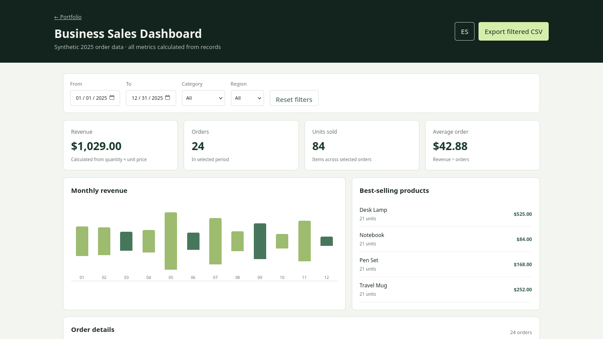

PROJECT CASE STUDY
Business Sales Dashboard
See synthetic orders become calculated indicators
Combine date, category and region filters, sort the order table and export the filtered records as CSV.

Open live demo ↗01 / PROBLEM
Problem: review a compact sales dataset without hand-written KPIs.
02 / OBJECTIVE
Objective: calculate indicators from records and allow filtering.
03 / SOLUTION
Solution: the original static project is served directly, with 24 deterministic fictional orders.
04 / ARCHITECTURE
Architecture: HTML/CSS/JavaScript and local dataset; no server or external API.
05 / IMPLEMENTATION
Implementation: four KPIs, monthly revenue bars, top products, sortable table, filters and CSV export.
06 / TESTING
Testing: six existing Node tests pass for formulas, filters, sorting, CSV escaping and labels.
07 / LIMITATIONS & ROADMAP
Limitations & roadmap: sample orders only, illustrative USD, no customer data.
08 / ACCESS
Access: live demo, repository and technical notes.